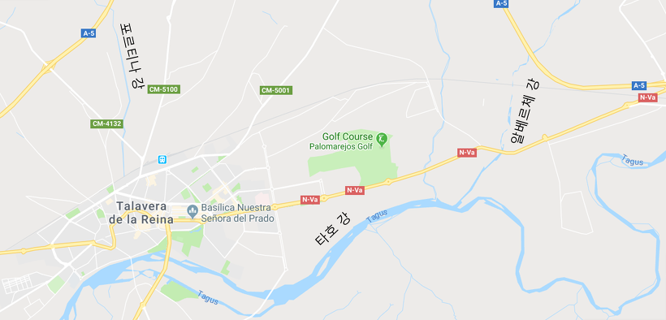
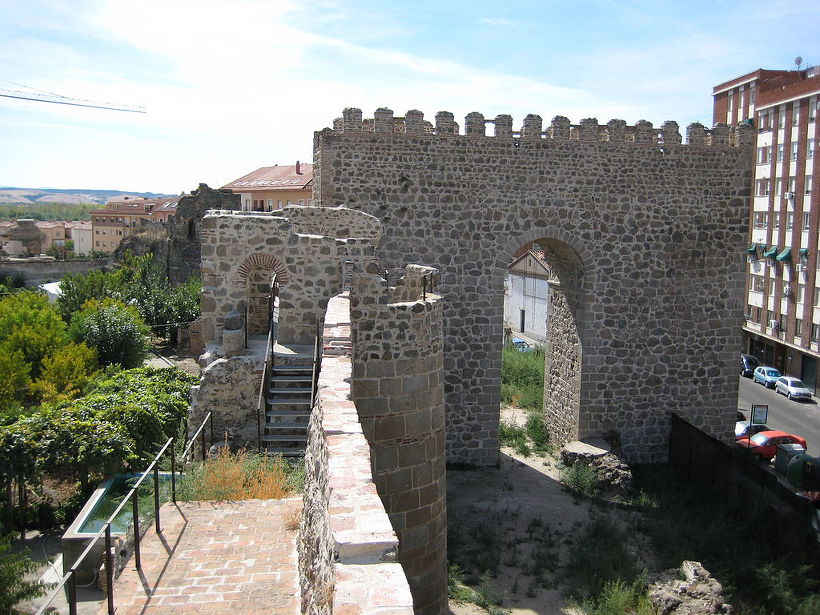
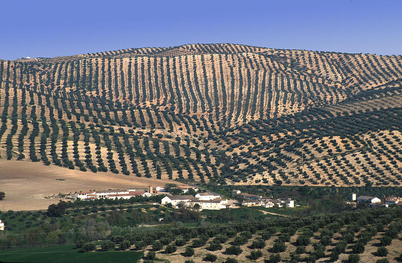
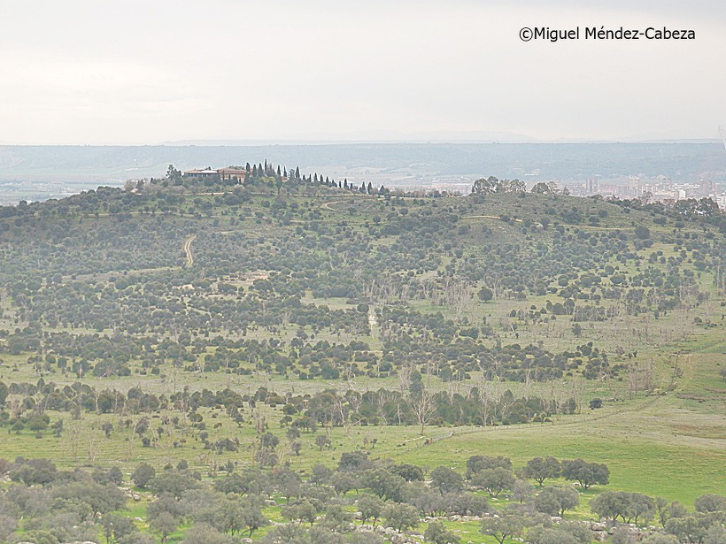

양측의 사정 - 탈라베라 전투 (3편)
게시: 2018-03-10T11:42:23+09:00
제2차 포르투 전투에서 술트를 몰아내고 기세를 탄 웰슬리의 영국군과는 달리, 쿠에스타의 스페인군, 좀 더 정확하게는 에스트레마두라(Estremadura)군은 신병들로 구성된 부대인데다 무척 의기소침한 상태였습니다. 쿠에스타의 군대는 그해 3월 28일에 있었던 메데진(Medellin) 전투에서 빅토르가 지휘하는 프랑스 제1 군단과 격돌하여 총 2만2천 중에 약 7천5백의 사상자와 함께 2천에 가까운 포로를 내는 등 사실상 궤멸에 가까운 피해를 입었기 때문이었습니다. 쿠에스타가 거느린 3만6천은 그 이후 새로 끌어모은, 애국심만 있는 신병들이 대부분이었습니다. 그리고 쿠에스타의 스페인군은 빅토르의 뒤를 추격하다가 그가 세바스티아니와 합류하자 황급히 웰슬리가 자리를 잡고 있던 탈라베라로 허둥지둥 후퇴해온 상태였습니다.
웰슬리는 확실히 명장의 조건을 갖추고 있었습니다. 그는 탈라베라에 도착하자마자 일대의 지형을 세심하게 관찰했습니다. 다만 그의 그릇은 나폴레옹보다 확실히 훨씬 더 작았습니다. 나폴레옹은 아우스테를리츠의 평원을 살펴보며 어느 위치로 러시아-오스트리아 연합군을 유인하여 어떻게 적군에게 섬멸적 타격을 입힐까 구상했지요. 그에 비해, 웰슬리는 그저 어느 위치가 방어하기에 더 유리할까를 부지런히 살폈습니다.

(현재의 탈라베라 주변 지도입니다. 당시 영국-스페인 연합군의 방어선은 대략 저 포르티나 시냇물을 따라 구축되었습니다.)
보통 방어선은 강을 따라 구축하는 것이 가장 좋습니다. 탈라베라 인근에는 유량이 꽤 풍부한 알베르체(Alberche) 강이 있었으나, 웰슬리는 여기서의 방어는 불가능하다고 판단했습니다. 프랑스군은 동쪽에서 올텐데, 불행히도 이 강의 동쪽이 고지대였고 연합군이 자리잡을 서안이 저지대였던 것입니다. 프랑스군이 자신들을 훤히 내려다보며 대포를 쏘아댈텐데, 그건 감당이 안 되는 일이었지요. 결국 그는 탈라베라 북쪽으로 길게 뻗은 포르티나(Portina) 시냇물을 따라 방어선을 구축했습니다. 실은 이 시냇물은 너무 얕고 좁아서 방어선으로 사용할 수가 없었습니다. 웰슬리가 여기를 택한 이유는 이 시냇물 바로 동쪽에 언덕이 있기 때문이었습니다. 이 언덕의 이름은 메데진 언덕(Cerro de Medellin)이라고 했는데, 다만 이 언덕은 웰슬리가 제일 좋아하는 형태는 아니었습니다. 그는 자신의 방어선을 따라 남북으로 길게 늘어진 언덕을 선호했습니다만, 불행히도 메데진 언덕은 거의 동서 방향으로 늘어진 언덕이었습니다. 다만 이 언덕 북쪽으로는 또 세구리야 산맥(Sierra de Segurilla)가 이어져 있었고 메데진 언덕과 세구리야 산맥 사이에는 좁은 협곡이 있었습니다. 이 협곡만 잘 틀어막으면 꽤 훌륭한 수비 라인을 구축할 수 있었습니다.
메데진 언덕과 탈라베라 사이의 텅빈 공간은 오히려 더 좋은 방어 조건을 제공해주었습니다. 이 곳은 평탄한 평원인 대신, 그에 맞게 올리브 나무들이 울창하게 심어져 있었고 거기에 올리브 밭의 경계를 표시하기 위한 돌담까지 잘 만들어져 있었던 것입니다. 탈라베라 데 라 레이나(Talavera de La Reina, 여왕의 탈라베라)라는 이 소도시 자체도 중세 시절의 아담한 성벽으로 둘러싸여 있어서, 근대적인 포격전에는 못 버티더라도 총격전에는 매우 효과적인 방어진지 역할을 할 수 있었습니다.

(현재도 남아있는 탈라베라의 성벽 일부입니다. 탈라베라를 감싼 성벽은 사실 성벽이라기보다는 한양 도성처럼 city wall에 가까운 것이었습니다. 중세에 만들어진 것이라 근대적 포격을 버틸 수준은 아니었습니다만 그래도 보병 전투에서는 여전히 훌륭한 방어벽 역할을 했습니다.)
웰슬리는 스페인군을 믿지 않았습니다. 사실 그는 자신의 부하인 영국군 사병들도 전혀 믿지 않았습니다. 웰슬리는 스페인군의 사병들은 물론 장교들, 심지어 쿠에스타 장군도 믿기는 커녕 경멸하는 편이었습니다. 그는 27일 프랑스군에게 쫓기다시피 허둥지둥 탈라베라로 들어온 스페인군에게는 언덕 후사면을 이용하는 고급(?) 방어전술을 구사할 능력이 없다고 보고 상대적으로 더 견고한 위치인 남쪽 전선, 즉 메데진 언덕과 탈라베라 사이의 돌담으로 둘러싸인 올리브 밭을 맡도록 제안했습니다. 쿠에스타도 이를 기꺼이 받아들였습니다.

(약 1년 전에 스페인 여행을 갔을 때 안달루시아 지방에 펼쳐진 올리브 밭을 보고 그 규모가 하도 광대해서 깜짝 놀란 적이 있었습니다. 정말 저 사진처럼 시야에 들어오는 온 산과 들판이 모조리 올리브 나무로 가득하더군요.)
빅토르가 이끄는 프랑스군 제1 군단 본진은 27일 오후에 아무 방해를 받지 않고 알베르체 강을 건넜습니다. 빅토르의 프랑스군은 가볍게 볼 적수가 아니었습니다. 27일 낮 쿠에스타의 후퇴를 지원하러 웰슬리가 내보낸 영국군 보병 연대와 기병대는 서투르게 움직이다 서로의 거리를 필요 이상으로 떨어뜨리는 작은 실수를 저질렀는데, 노련한 빅토르는 그 작고 짧은 틈은 덮쳐 영국군을 400명이라는 큰 숫자의 사상자를 남기고 후퇴하게 만들었습니다. 게다가 빅토르는 무척이나 부지런하고 투지가 넘치는 전형적인 나폴레옹의 부하였습니다. 혼쭐이 나서 물러난 영국군과 스페인군은 저녁 무렵이 되자 일단 오늘 전투는 끝났구나라고 생각했습니다만, 전혀 그렇지 않았습니다.
저녁 7시 경 연합군의 방어선 앞에 도착한 빅토르는 스페인군의 방어선을 확인하고자 탈라베라와 메데진 언덕 사이의 올리브 밭 쪽으로 소수의 정찰 기병대를 내보냈는데, 여기서 그만 사고가 터집니다. 저 멀리 나타난 프랑스군 기병대를 보고 흥분한 스페인군이, 아직 그들이 사거리 안에 들어오기 훨씬 전에 일제 사격을 퍼부은 것입니다. 더 꼴불견이었던 것은 그 일제 사격 직후 머스켓 소총을 쏜 스페인군 병사 자신들이 알 수 없는 이유로 공포에 질려 '배신이다'를 외치며 방어선을 버리고 도망쳤다는 점이었습니다. 영국 측이 전하는 바에 따르면 이렇게 도망친 스페인군은 탈라베라 시내까지 도망쳐 들어간 뒤 시내 술집을 습격하여 와인을 퍼마셨다고 합니다만, 그건 사실이 아닌 것 같습니다. 일단 여기서 도망친 스페인군은 약 2천명에 불과(?)했습니다. 작은 수는 아니지만 전체 3만4천 중 3만2천은 자리를 지켰습니다. 그리고 이렇게 겁에 질려 도망친 2천명은 쿠에스타가 출동시킨 스페인 기병대에 의해 곧 다시 원위치로 돌아왔습니다. 만약 스페인군 전체가 어이없이 이렇게 무너졌다면 영국군의 작은 실수도 포착하던 빅토르가 그런 절호의 기회를 놓칠 리가 없었겠지요.
이 사건이 어느 정도의 영향을 주었는지는 알 수 없으나, 빅토르는 연합군의 방어선 지형을 면밀히 관찰해 본 뒤, 웰슬리가 의도하던 결론을 내렸습니다. 즉, 탈라베라와 메데진 언덕 사이의 올리브 밭은 상당히 견고한 방어선이므로 차라리 메데진 언덕을 공격하는 것이 더 낫겠다는 것이었습니다. 게다가 스페인군의 상태로 볼 때 영국군이 무너지면 스페인군은 저절로 무너질 것이므로, 영국군이 맡은 메데진에 전력을 기울이자는 결론을 내렸습니다. 하지만 빅토르의 모든 생각이 웰슬리가 예상했던 범주 내에 들어왔던 것은 아니었습니다. 빅토르는 웰슬리의 예상과는 반대로, 27일 밤 영국군이 편하게 잠을 자게 내버려둘 생각이 없었습니다.
빅토르에게는 서둘러야 했던 이유가 있었습니다. 그는 승리를 독차지하고 싶었습니다. 세바스티아니는 그렇다치고, 그는 경멸하던 조제프 왕과 주르당의 지휘를 받아가며 싸울 생각이 전혀 없었던 것입니다. 빅토르는 한밤 중에 뤼팽(Ruffin) 장군의 사단을 출동시켜 영국군 방어선 중 가장 강력한 부분이었던 메데진 언덕 정상부를 들이쳤습니다. 거길 탈취하면 영국군은 물러날 것이고, 그러면 스페인군도 물러날 것이라는 계산이었지요. 그러나 과욕은 실수를 낳는 법입니다. 게다가 평소 나폴레옹이 야간 전투를 싫어했던 것은 다 이유가 있었습니다. 뤼팽 사단 3개 연대 중 무려 2개 연대가 어둠 속에 길을 잃고 엉뚱한 곳을 헤맸고, 목표 지점에 제대로 접근한 것은 약 1600명 규모인 제9 경보병 연대 하나 뿐이었던 것입니다.

(세구리야 산맥에서 내려다본 메데진 언덕입니다.)
이렇게 고작 1개 연대 병력으로 영국군 방어선 중 가장 단단한 곳을 들이친 프랑스군의 공세는 산산조각 나면서 좌절되었을까요 ? 그게 또 전혀 그렇지 않았습니다. 이들은 능선 바로 아래 자리잡고 있던 KGL(King's German Legion, 하노버 출신의 독일인들로 구성된 영국군) 여단을 삽시간에 격파하고 메데전 언덕 최정상부를 점령했습니다. 웰링턴이 철석같이 의지하려고 했던 메데진 언덕이 어이없이 떨어지는 순간이었고, 어쩌면 이대로 탈라베라 전투의 끝이 될 수도 있는 순간이었습니다. 이게 대체 어찌된 일이었을까요 ?
Source : http://lamejortierradecastilla.com/la-batalla-de-talavera-y-2-la-sangre-corre-en-la-portina/
https://www.bbc.co.uk/radio4/wellington/talavera_pop.shtml
https://en.wikipedia.org/wiki/Jean-Baptiste_Jourdan
http://www.worcestershireregiment.com/wr.php?main=inc/h_talavera
http://www.napoleon-series.org/military/battles/1809/Peninsula/talavera/c_talaveraoob.html
http://www.historyofwar.org/articles/battles_talavera.html
http://www.historyofwar.org/articles/campaign_talavera.html
https://en.wikipedia.org/wiki/Battle_of_Talavera